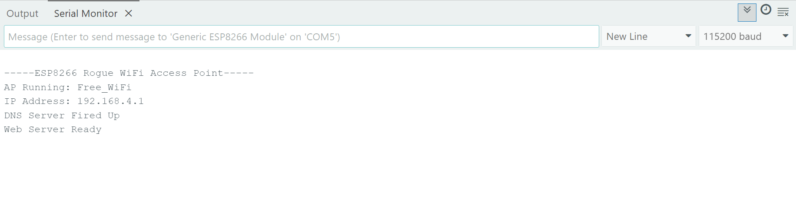
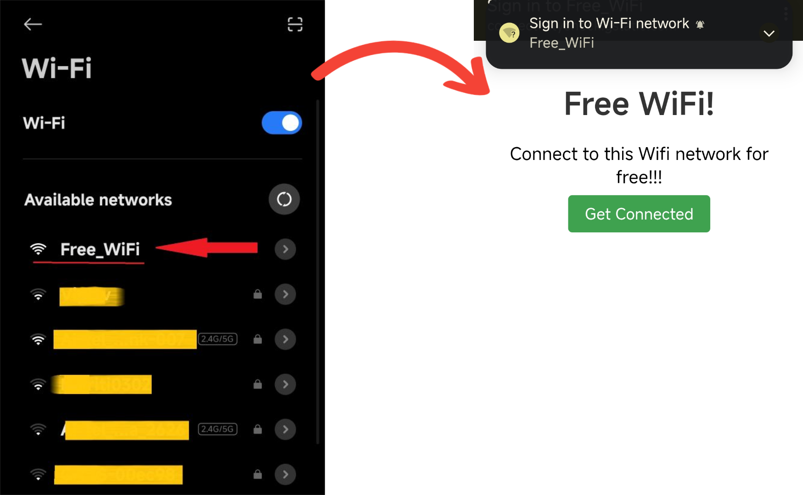
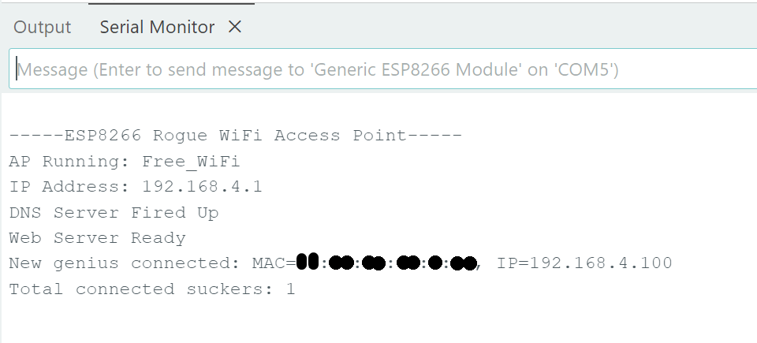

15 Jul, 2025
Repository link: https://github.com/ProgrammerPratik/Rogue-Access-Point-using-ESP8266
A simple project where I create a connectable access point (WIFI?) using just a little esp8266 which demonstrates how dangerous connecting to random Wifi's can be, and how your device's data can be compromised by you just "connecting".
Disclaimer: This is only my personal project and is for educational purposes only. It is not meant to promote or encourage misuse. Readers are responsible for how they use this information.
1. Download the rogue-ap.ino file from github.
2. Connect ESP8266 to your system.
3. Open that rogue-ap.ino file in the Arduino IDE.
(setup all the appropriate drivers & libraries for arduino to esp8266 communication by following any online guide, and make sure you can install stuff in it.)
4. After successful installation open "Serial Monitor" and select 115200 baud rate.
5. If nothing comes up, try reconnecting the ESP8266.
After setting up and opening serial monitor, if you see this that means its running:
Now you can try connecting to this Wifi that you just created on yout ESP8266 from your phone or other system. It will openn the fake HTML page on the device as if you are connecting to something real lol:
And if you look at the serial monitor, you will see the collected data (MAC address in this case)
The ESP8266's WiFi radio sends 802.11 beacon frames (management frames that contains info that can be used in wireless networks) advertising as the fake "Free_WiFi". A built-in DHCP server (part of library) hands out IPs to clients, so when someone tries to connect to this "wifi" sending a DHCP request, the ESP's server catches it. The ESP acts as the gateway and DNS server, controlling all traffic.
The DNSServer library responds to DNS queries with "192.168.4.1". And the ESP8266WebServer library listens for TCP connections at port 80, and hits with the HTML login page whenever someone connects. Whenever user tries to access any website request is sent to its corresponding IP (like google.com -> an IP), so when client sends an HTTP request to 192.168.4.1, the webserver catches it and serves the HTML portal.
wifi_softap_get_station_info() Grabs a list of connected clients' MACs and IPs from the ESP's WiFi stack.
More data can be extracted like Hostname ("Pratik's phone"), HTTP Request data (user agent, form data etc) and other metadata. Obviously more different kinds of juicy data can be collected just by this little ESP, imagine what else they can achieved with full fledged network setup. I might try to implement them if possible in future.